The goal of nationalparkcolors is to provide an interface to the beautiful colors in National Park posters and images. The posters are a mix of the WPA originals and more modern remakes.


Example
There are 25 total palettes to choose from.
library(nationalparkcolors)
names(park_palettes)
#> [1] "SmokyMountains" "RockyMountains" "Yellowstone" "Arches"
#> [5] "ArcticGates" "MtMckinley" "GeneralGrant" "Hawaii"
#> [9] "CraterLake" "Saguaro" "GrandTeton" "BryceCanyon"
#> [13] "MtRainier" "Badlands" "Redwoods" "Everglades"
#> [17] "Voyageurs" "BlueRidgePkwy" "Denali" "GreatBasin"
#> [21] "ChannelIslands" "Yosemite" "Acadia" "DeathValley"
#> [25] "Zion"You can create a palette in just one command (+ get an image of the palette).
If you want a specific number of colors, you can also do that.
Palettes
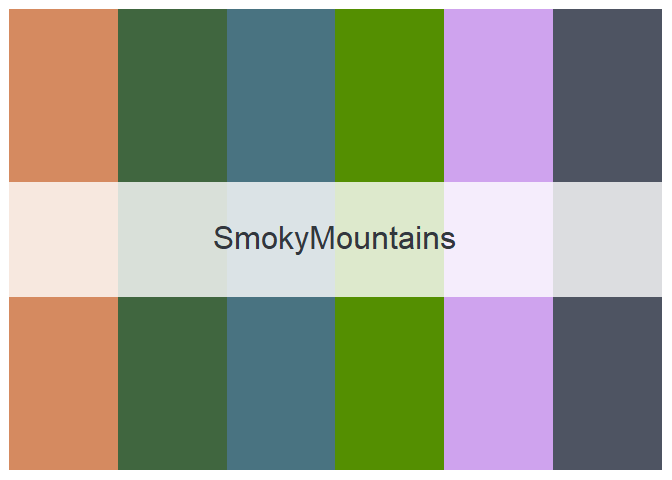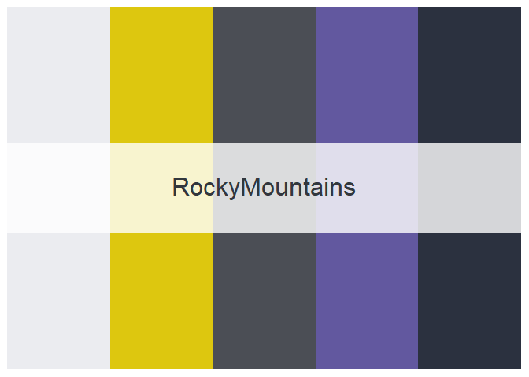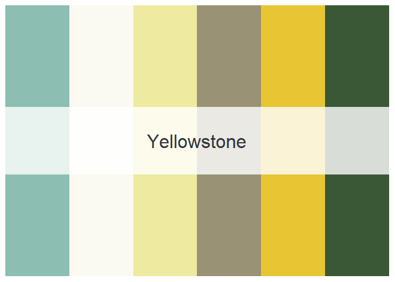 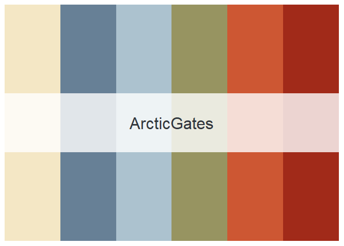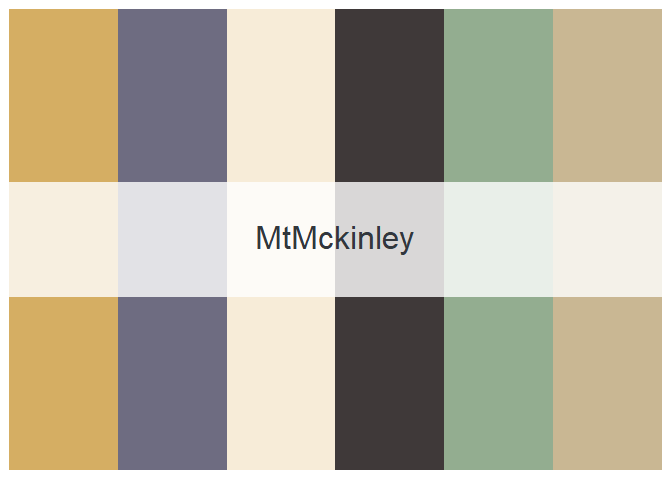
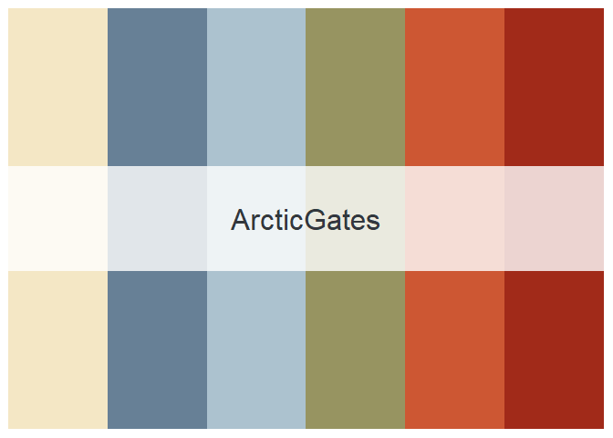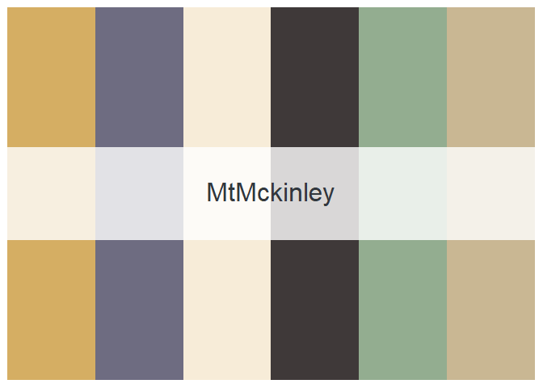 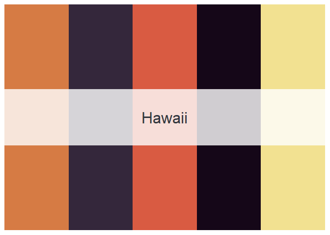
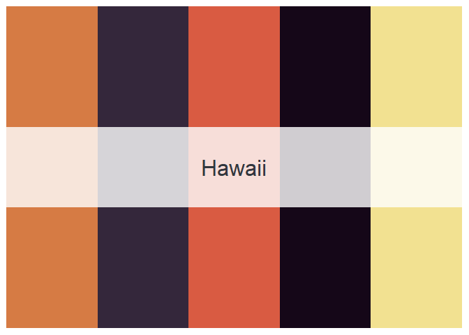 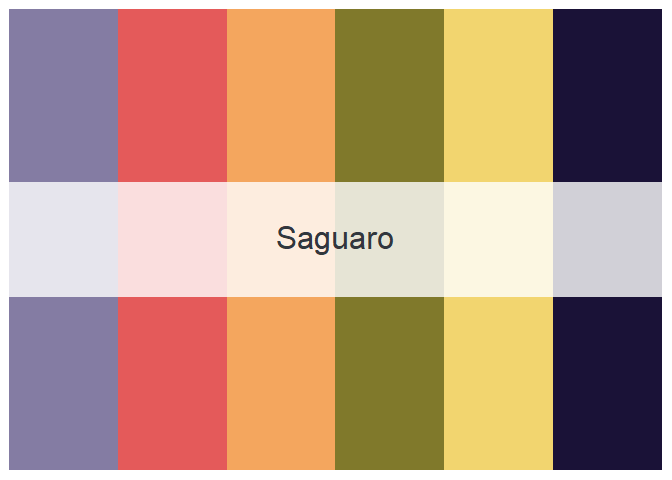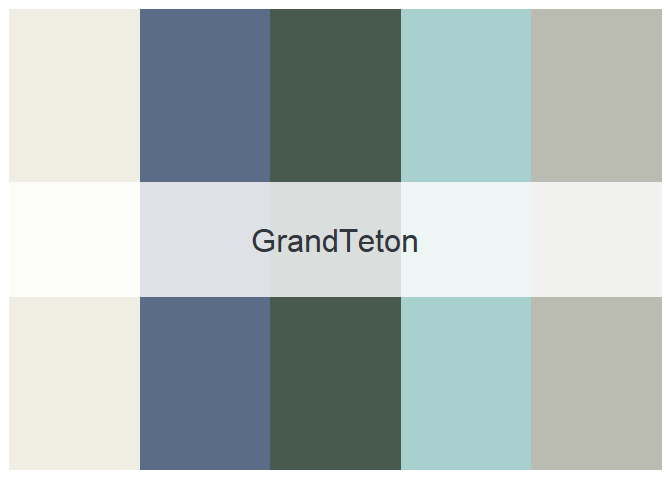
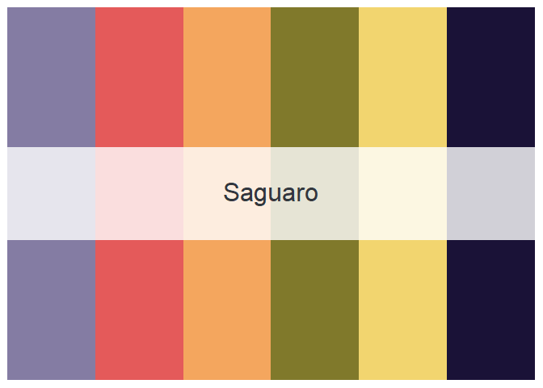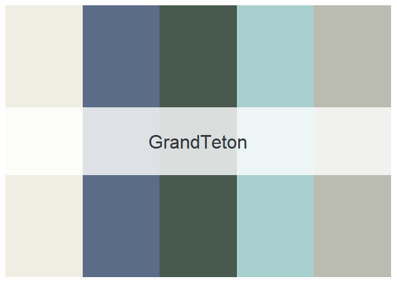

 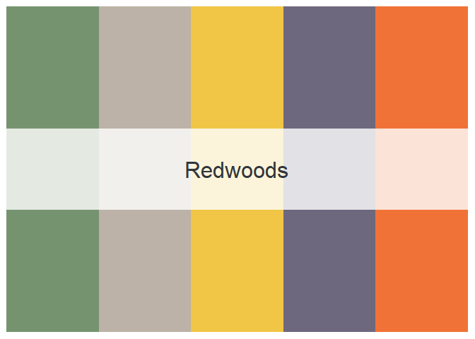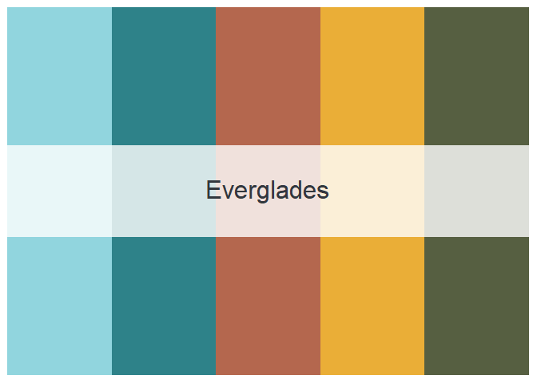
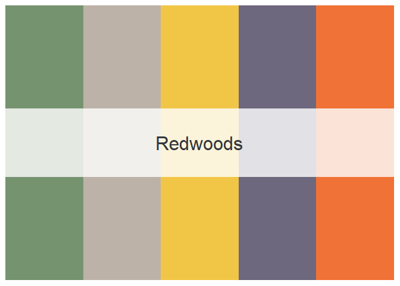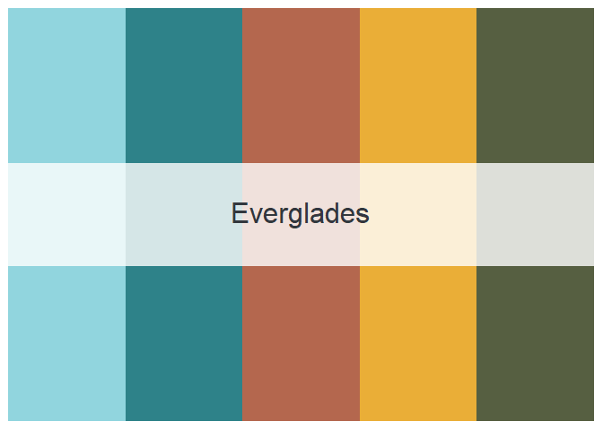


 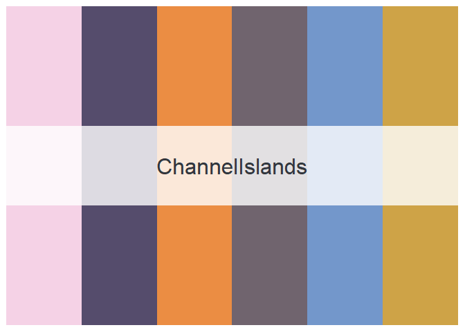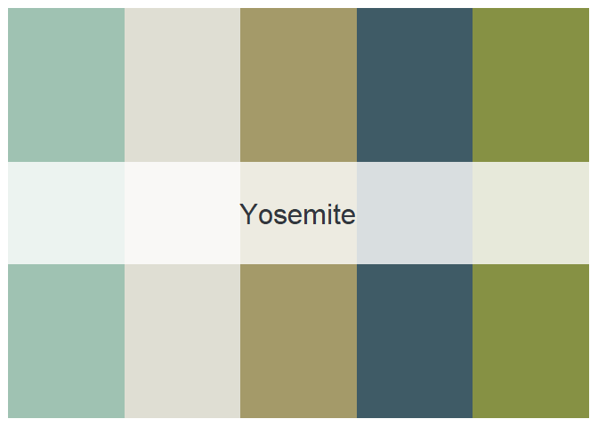
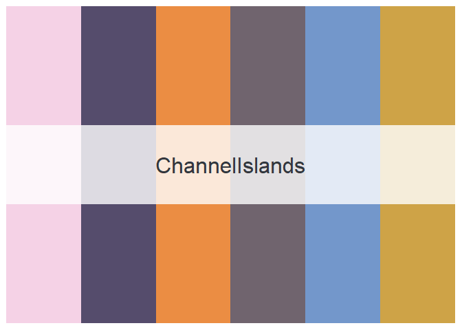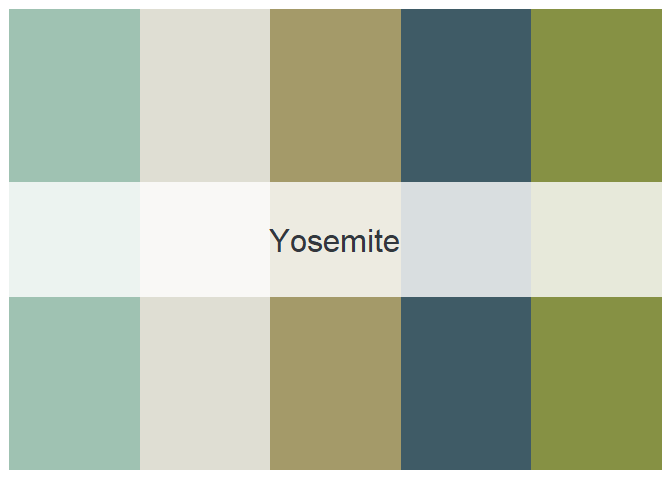


Along with the nice color palettes, I also hope that people think more about the national park system when using this package. I am not affiliated with the Park Service, but if you’d like to support them you can donate here.